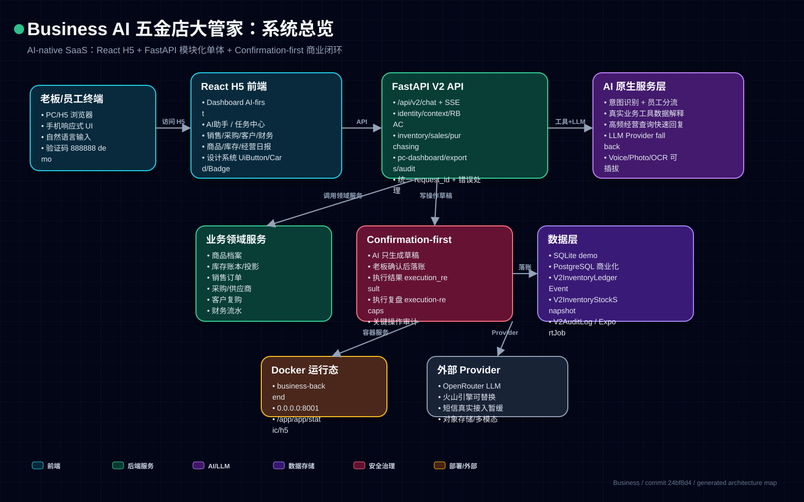
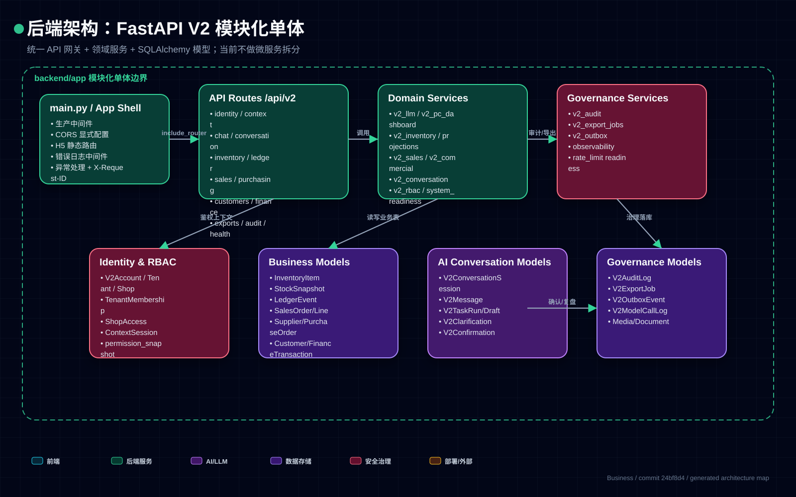
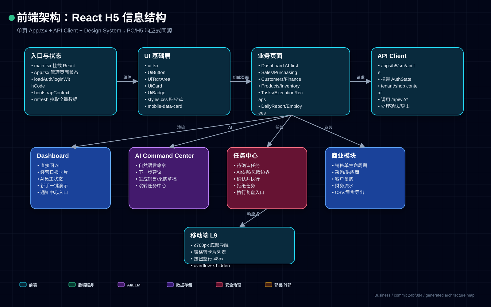
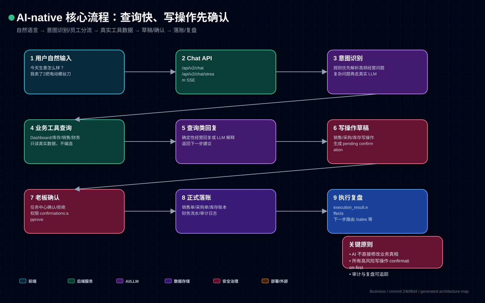
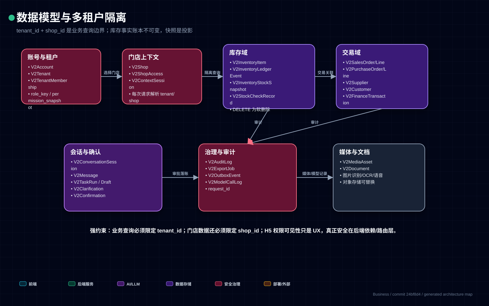
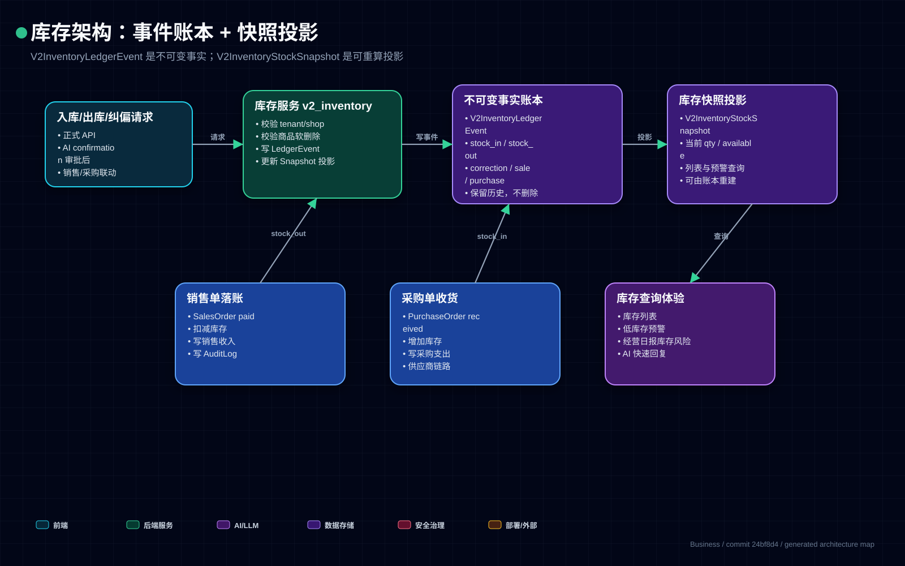
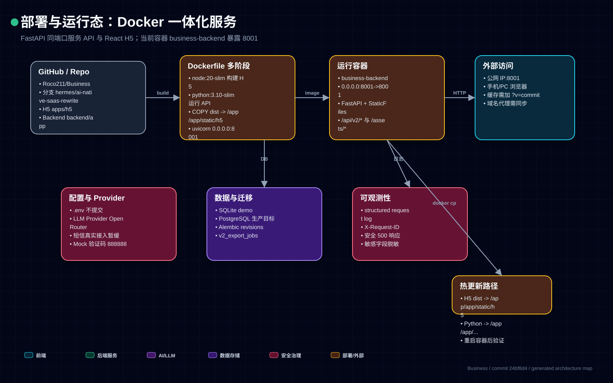
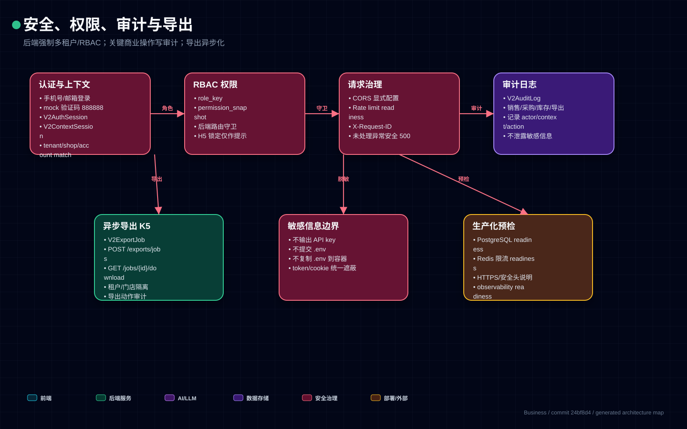
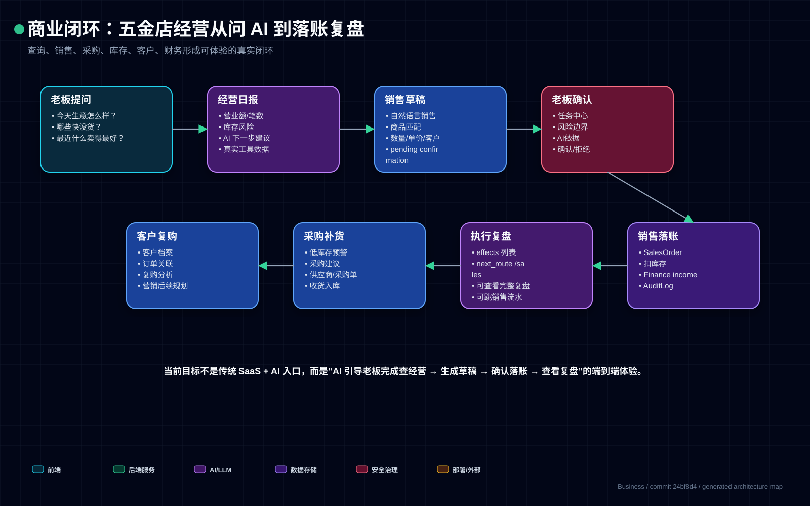
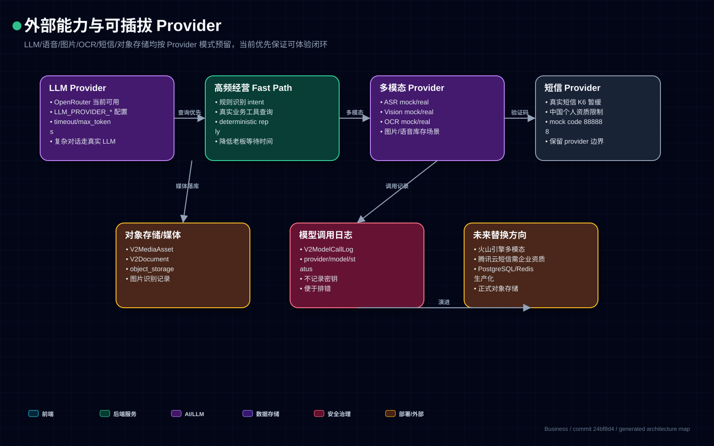

系统总览
端到端整体架构：H5、FastAPI、AI、业务服务、数据层、Docker、Provider

后端模块化单体
main.py、API Routes、Domain Services、模型、治理服务

前端信息结构
React H5 页面、设计系统、AI 工作台、移动端响应式

AI-native confirmation-first 流程
查询快路径、写操作草稿、老板确认、落账和复盘

数据模型与多租户
tenant/shop 隔离、核心模型、治理与媒体模型

库存账本与投影
不可变 LedgerEvent 与 StockSnapshot 投影

Docker 部署运行态
Dockerfile、多阶段构建、8001、静态目录、外部访问

安全、审计、导出
认证、RBAC、request_id、AuditLog、ExportJob、生产预检

商业闭环
老板问 AI 到销售/采购/库存/财务/复盘的真实闭环

Provider 集成图
LLM、多模态、短信、对象存储与未来替换方向
